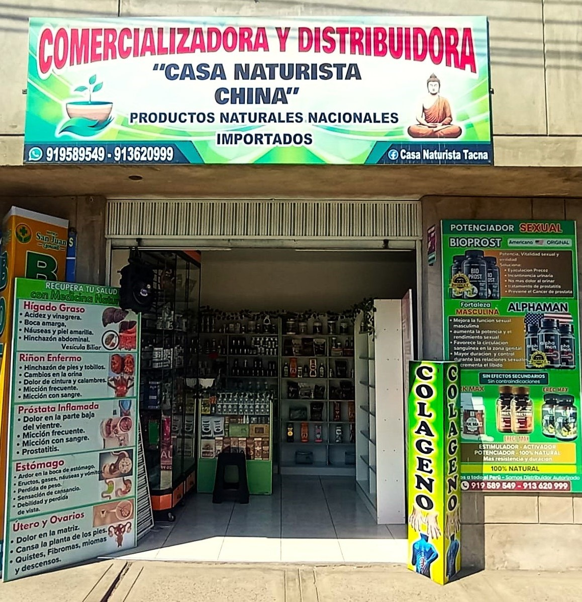
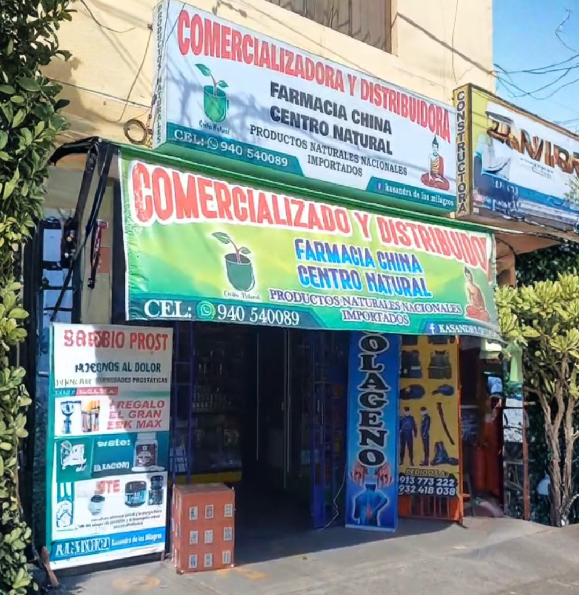

Misión
Acercar a las familias de Tacna productos naturales originales, con información clara y acompañamiento durante todo el tratamiento.
Casa Naturista China nació en 2024 en Tacna con una idea sencilla: vender productos naturales originales y explicar bien cómo usarlos. Hoy atendemos en dos locales y enviamos a todo el Perú.
Sabemos que algunos clientes ya conocen lo que buscan y otros necesitan orientación. Por eso esta web reúne en un solo lugar precio, forma de uso, presentación y disponibilidad de cada producto, para que compares y decidas con tranquilidad.
Acercar a las familias de Tacna productos naturales originales, con información clara y acompañamiento durante todo el tratamiento.
Ser la casa naturista de referencia en el sur del Perú por la confianza de sus clientes y la calidad de su asesoría.
Honestidad en lo que recomendamos, productos 100 % originales y respeto por el tiempo y la salud de cada cliente.

Local 1: Av. Patricio Melendez 1290, Cercado de Tacna
Lunes a sábado 9:00 – 20:00 · Domingo 9:00 – 14:00

Local 2: Asoc. San Francisco Mz 19 Lote 1- Distrito CGAL, Tacna
Lunes a sábado 9:00 – 19:00 · Domingo cerrado
Entre 2 y 4 semanas de uso continuo para la mayoría de tratamientos. Los cambios son graduales y sostenidos.
Sí, pero con criterio. Te indicamos qué combinar, qué separar de tus medicamentos y a qué hora tomarlo.
Casi todo sí, ajustando la dosis. En embarazo, lactancia o tratamiento médico, consúltanos antes.